Activity: Detach and attach face sets
This activity demonstrates the method of detaching and attaching faces in response to a design change.
Detach an existing set of faces and make a change to the model. Then reattach them within the same part. In this activity you will:
-
Detach faces.
-
Extend a face (representing the design change).
-
Reattach the faces.
Click here to download the activity file.
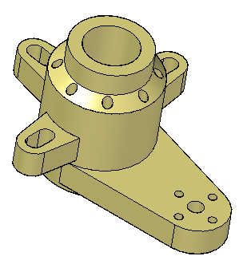
In this activity, you will respond to a major design change. Three mounting arms remain in place as the height of the body increases.
-
Open detach.par.
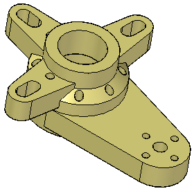
In PathFinder, select the features Ear, Slot, Pattern4.
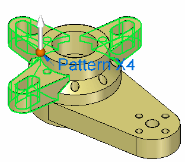
Right-click and select Detach.
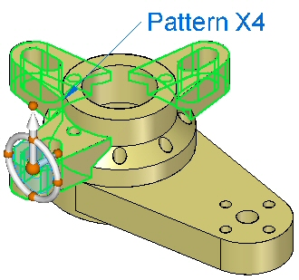
The faces disappear from the display.
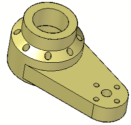
These detached face sets appear gray in PathFinder.
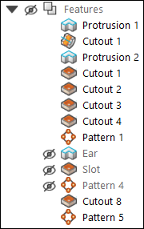
You can display the detached face sets by clicking the check box in PathFinder.
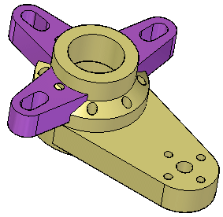
Ensure display of the detached face set is off.
Select the top and beveled faces shown.
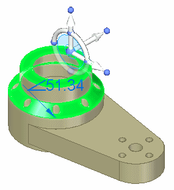
Move the selected faces a distance of 50 mm.
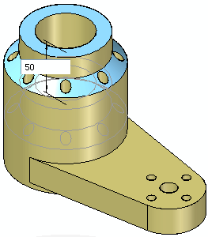
Press Escape to finish.
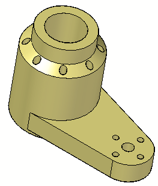
Turn on display of the detached face sets Ear, Slot, Pattern4 and select them, either graphically or from PathFinder. The latter method is often easier.
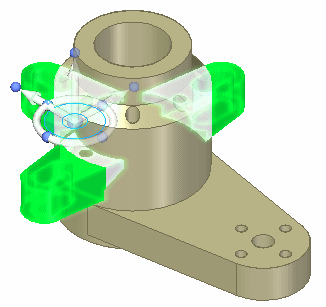
Right-click and choose Attach.
You can see the face sets attach by their color change.
Save and close this file.
In this activity you learned how to detach features and then make model changes. After changes were made, you learned how to reattach the detached features. The detached features are listed in PathFinder. Their display can be turned on or off.
-
Click the Close button in the upper-right corner of this activity window.